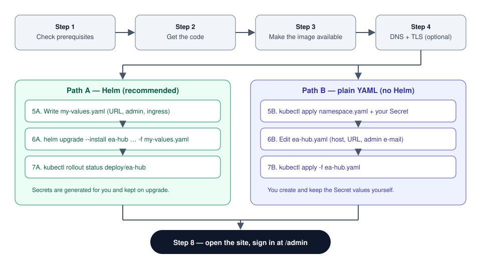

Deploying EA-Hub on Kubernetes — a step-by-step guide¶
This guide is for someone new to EA-Hub who wants to run it on their own Kubernetes cluster, using either the Helm chart (recommended) or the plain YAML file (no Helm). It starts with what you need to have, then walks through every step until you are signed in to the admin console.
Other platforms (Docker, local Kubernetes, OpenShift, Rancher, Azure, AWS, Google Cloud): see the guide index.
Contents
- What gets deployed
- Requirements
- Step 1 — Check your tools and cluster
- Step 2 — Get the code
- Step 3 — Make the container image available
- Step 4 — Domain name and HTTPS (optional)
- Path A — Install with Helm
- Path B — Install with the plain YAML file
- Step 8 — Open the site and sign in
- Day-2 operations: upgrade, backup, restore, uninstall
- Troubleshooting
- Reference: all settings
1. What gets deployed¶

| Resource | Purpose |
|---|---|
Deployment ea-hub |
The web application (Node.js, port 3000). An init container prepares the database (schema, roles, first admin) every time a pod starts. Doing that more than once is safe. |
Service ea-hub |
Internal address of the app on port 80. |
Ingress ea-hub (optional) |
Makes the site reachable from outside under your domain, with HTTPS if you want it. |
StatefulSet ea-hub-postgres |
PostgreSQL 16 with its own persistent volume. It can be replaced by an external database. |
Secret ea-hub |
Passwords and keys. Helm generates them for you and keeps them on upgrades. |
PVC ea-hub-storage |
Uploaded files (logos, product images, attachments). |
PVC ea-hub-backups |
Daily backups. |
| CronJobs | newsletter (06:00 UTC), daily-cleanup (02:30), semantic-index (03:15), backup (01:00). |
EA-Hub needs no external services to run: no Supabase, no Vercel, no cloud database. Everything lives in your cluster.
2. Requirements¶
2.1 Hardware (cluster capacity)¶
These are the totals the chart asks for across the cluster. A single node is fine.
| Minimum | Recommended | |
|---|---|---|
| CPU | 2 vCPU | 4 vCPU |
| Memory | 4 GB RAM | 8 GB RAM |
| Disk for volumes | 35 GB (5 uploads + 10 database + 20 backups) | 60 GB or more, on SSD |
| Disk for images | ~3 GB free on each node (the app image is ~1 GB) | |
| CPU architecture | amd64 (x86-64) |
arm64 is published for tagged releases |
What each part requests and is allowed to use (all can be changed in values.yaml):
| Container | CPU request | Memory request → limit |
|---|---|---|
| app | 100m | 384 Mi → 1.5 Gi |
| PostgreSQL | 100m | 256 Mi → 1 Gi |
| migrate (init, short-lived) | 50m | 128 Mi → 512 Mi |
| each CronJob (short-lived) | 10m | 64 Mi → 256 Mi |
2.2 Software¶
| Software | Version | Needed for | How to check |
|---|---|---|---|
| Kubernetes | 1.27 or newer (CronJob timeZone) |
everything | kubectl version |
| kubectl | matching your cluster ±1 minor | everything | kubectl version --client |
| Helm | 3.8+ or 4.x | Path A only | helm version |
| git | any | downloading the code | git --version |
| A default StorageClass | dynamic provisioning, ReadWriteOnce |
the volumes | kubectl get storageclass (one marked (default)) |
| An Ingress controller | ingress-nginx, Traefik… | reaching the site by domain (optional) | kubectl get ingressclass |
| cert-manager | 1.x | automatic HTTPS certificates (optional) | kubectl get pods -n cert-manager |
| Docker | 24+ | only if you build the image yourself | docker version |
| openssl | any | only for Path B (generating secrets) | openssl version |
No cluster yet? For a single machine (Ubuntu 22.04/24.04 with the hardware above), k3s gives you everything in the table (Kubernetes, a default StorageClass and the Traefik ingress controller) with one command:
curl -sfL https://get.k3s.io | sh -
mkdir -p ~/.kube && sudo cp /etc/rancher/k3s/k3s.yaml ~/.kube/config && sudo chown $USER ~/.kube/config
kubectl get nodes # STATUS should be Ready
Managed clusters (AKS, EKS, GKE, DigitalOcean, OpenShift…) work too.
2.3 Access and accounts¶
| What | Why | Required? |
|---|---|---|
| Access to the app image | The repository is private, so its image on ghcr.io is private too. You need a GitHub account with access to E20E-Tools/ea-hub-selfhost and a personal access token with read:packages, or you build the image yourself (Step 3). |
yes |
| An e-mail address for the first admin | It is the sign-in name of the first administrator. | yes |
A domain name (e.g. hub.example.com) with access to its DNS |
To reach the site by name with HTTPS. Without it you can still use port-forwarding or a NodePort. | optional |
| SMTP account (host, port, user, password) | "Forgot password" e-mails, notifications, newsletter. | optional |
| OpenAI API key | Search by meaning. | optional |
| Cloudflare Turnstile keys | Bot protection on public forms. | optional |
Every optional feature turns itself on only when its key is set, and stays quietly off otherwise.
2.4 Network¶
- Users reach the site over HTTP 80 / HTTPS 443 on the ingress controller.
- For automatic HTTPS (Let's Encrypt), ports 80 and 443 must be reachable from the internet and the DNS name must point to the ingress controller.
- Outbound internet from the cluster is only needed for optional features (SMTP, OpenAI, certificates) and to pull images.
The steps at a glance¶

Step 1 — Check your tools and cluster¶
Run these four commands. Each should print something like the example output.
kubectl version # Server Version: v1.27 or newer
helm version # v3.8+ or v4.x (Path A only)
kubectl get nodes # every node shows STATUS = Ready
kubectl get storageclass # one line ends with "(default)"
Example of a healthy cluster:
$ kubectl get nodes
NAME STATUS ROLES AGE VERSION
server1 Ready control-plane,master 3d v1.31.4+k3s1
$ kubectl get storageclass
NAME PROVISIONER RECLAIMPOLICY VOLUMEBINDINGMODE
local-path (default) rancher.io/local-path Delete WaitForFirstConsumer
No
(default)StorageClass? Either mark one as default (kubectl patch storageclass <name> -p '{"metadata":{"annotations":{"storageclass.kubernetes.io/is-default-class":"true"}}}') or setstorage.storageClass,postgres.storage.storageClassandbackup.storage.storageClassin your values.
Step 2 — Get the code¶
git clone https://github.com/E20E-Tools/ea-hub-selfhost.git
cd ea-hub-selfhost
The two folders you need:
deploy/helm/ea-hub/ ← the Helm chart (Path A)
deploy/kubernetes/ ← the plain YAML files (Path B)
Step 3 — Make the container image available¶
Pick one option.
Option 1 — Use the published image (simplest)¶
Images are published for each release tag, e.g. ghcr.io/e20e-tools/ea-hub-selfhost:1.0.0, for both amd64 and arm64. They are public, so nothing needs to be set up and you can go to Step 4.
Quickest install, no clone at all. The chart is published as well, so this one command installs everything:
helm install ea-hub oci://ghcr.io/e20e-tools/charts/ea-hub -n ea-hub --create-namespace > --set appUrl=https://hub.example.com --set ingress.enabled=true --set ingress.host=hub.example.com > --set admin.email=you@example.comThe classic repository works too:
helm repo add ea-hub https://e20e-tools.github.io/ea-hub-selfhost. The chart is also listed on Artifact Hub.
If your organisation mirrors the image into a private registry, create a pull secret so Kubernetes can download it:
kubectl create namespace ea-hub
kubectl -n ea-hub create secret docker-registry ghcr-pull \
--docker-server=ghcr.io \
--docker-username=<your-github-user> \
--docker-password=<token-with-read:packages>
You will reference ghcr-pull and the tag in Path A or B.
Option 2 — Build the image and push it to your own registry¶
docker build -t registry.example.com/ea-hub-selfhost:1.0.0 .
docker push registry.example.com/ea-hub-selfhost:1.0.0
Add --build-arg WITH_LOCAL_MODEL=0 for a ~120 MB smaller image without the local search model.
Option 3 — Single-node k3s without a registry¶
docker build -t ea-hub-selfhost:local .
docker save ea-hub-selfhost:local | sudo k3s ctr images import -
Then use image.repository=ea-hub-selfhost, image.tag=local and image.pullPolicy=Never.
Step 4 — Domain name and HTTPS (optional)¶
- Find the external address of your ingress controller:
kubectl get svc -A | grep -Ei 'ingress|traefik' # look at the EXTERNAL-IP column (on k3s: the server's own IP) - At your DNS provider create an A record:
hub.example.com → <that IP>. - For automatic certificates, install cert-manager and a Let's Encrypt issuer (once per cluster):
kubectl apply -f https://github.com/cert-manager/cert-manager/releases/download/v1.16.2/cert-manager.yaml cat <<'EOF' | kubectl apply -f - apiVersion: cert-manager.io/v1 kind: ClusterIssuer metadata: name: letsencrypt spec: acme: server: https://acme-v02.api.letsencrypt.org/directory email: you@example.com privateKeySecretRef: name: letsencrypt-account solvers: - http01: ingress: ingressClassName: traefik # or nginx EOF
No domain? Skip this step and use port-forwarding in Step 8.
Path A — Install with Helm (recommended)¶
5A. Write your values file¶
Create my-values.yaml outside the repository (it holds secrets). Replace the values marked <…>:
# my-values.yaml
appUrl: https://hub.example.com # exactly what people type in the browser
admin:
email: <admin@yourcompany.com>
password: <a-long-password-10+-chars> # used once to create the first admin
image:
repository: ghcr.io/e20e-tools/ea-hub-selfhost # or your registry (Step 3)
tag: "1.0.0" # an existing release tag (see the repository's Releases/Packages)
imagePullSecrets:
- name: ghcr-pull # remove these two lines if the image is public/local
ingress:
enabled: true
className: traefik # nginx for ingress-nginx; "" = cluster default
host: hub.example.com
tls: true
annotations:
cert-manager.io/cluster-issuer: letsencrypt # remove if you have no cert-manager
# Optional — delete what you do not use
smtp:
host: smtp.example.com
port: 587
user: mailer@example.com
password: <smtp-password>
from: "EA-Hub <mailer@example.com>"
features:
openaiApiKey: ""
turnstileSiteKey: ""
turnstileSecretKey: ""
You do not need to invent database passwords or encryption keys: the chart generates them on the first install and keeps them on every upgrade.
Shortcut:
./setup.sh --helm(Linux/macOS) or.\setup.ps1 -Helm(Windows) asks you these questions and writesea-hub-values.yamlfor you.
Check the file before installing. The chart validates it against values.schema.json, so mistakes such as a malformed URL or a short password are reported here:
helm lint deploy/helm/ea-hub -f my-values.yaml
helm template ea-hub deploy/helm/ea-hub -n ea-hub -f my-values.yaml > /dev/null && echo OK
6A. Install¶
helm upgrade --install ea-hub deploy/helm/ea-hub \
--namespace ea-hub --create-namespace \
-f my-values.yaml
Helm prints the next steps (the chart's NOTES.txt):
Release "ea-hub" does not exist. Installing it now.
NAME: ea-hub
NAMESPACE: ea-hub
STATUS: deployed
REVISION: 1
NOTES:
EA-Hub is being installed in namespace "ea-hub".
…
1) Wait until it is ready / … (first start runs the database setup, 1–3 minutes):
kubectl -n ea-hub rollout status deploy/ea-hub --timeout=10m
2) Open the site / …:
https://hub.example.com
(DNS for hub.example.com must point to your ingress controller.)
3) Sign in / …: https://hub.example.com/admin
e-mail: admin@yourcompany.com (password: the one you set in admin.password)
…
7A. Wait until it is ready¶
kubectl -n ea-hub rollout status deploy/ea-hub --timeout=10m
kubectl -n ea-hub get pods
Expected:
deployment "ea-hub" successfully rolled out
NAME READY STATUS RESTARTS AGE
ea-hub-7c9d6f8b5d-x2klm 1/1 Running 0 2m
ea-hub-postgres-0 1/1 Running 0 2m
While the pod shows Init:0/1, the database is being prepared. Follow it with:
kubectl -n ea-hub logs deploy/ea-hub -c migrate -f
[migrate] waiting for database on ea-hub-postgres …
[migrate] bootstrap (roles, auth, storage) …
[migrate] upstream migrations …
[migrate] 91 migrations applied in total
[migrate] post-migrate (buckets, realtime) …
[migrate] app role eahub_app ready
[migrate] admin account created
[migrate] done
Continue with Step 8.
Path B — Install with the plain YAML file¶
deploy/kubernetes/ea-hub.yaml is generated from the Helm chart. It contains no secrets: you create them yourself.
5B. Namespace and Secret¶
kubectl apply -f deploy/kubernetes/namespace.yaml
cp deploy/kubernetes/secret.example.yaml ~/ea-hub-secret.yaml # keep it OUTSIDE the repository
Generate one random value for each CHANGE_ME:
openssl rand -hex 32 # run once per value
Edit ~/ea-hub-secret.yaml:
stringData:
postgres-password: 3f1c… # random
app-db-password: 9ab4… # random
app-encryption-key: 6d02… # random, at least 32 characters — NEVER change it later
cron-secret: 51e7… # random
admin-password: <your admin password, 10+ characters>
Then apply it:
kubectl apply -f ~/ea-hub-secret.yaml
6B. Put your address, admin e-mail and image into the YAML¶
The file uses placeholders. Replace them, here with sed (on macOS use sed -i ''):
cp deploy/kubernetes/ea-hub.yaml ~/ea-hub.yaml
sed -i 's#http://ea-hub.local#https://hub.example.com#g; s#ea-hub.local#hub.example.com#g' ~/ea-hub.yaml
sed -i 's#admin@example.com#admin@yourcompany.com#g' ~/ea-hub.yaml
# only if you use your own registry (Step 3, option 2):
sed -i 's#ghcr.io/e20e-tools/ea-hub-selfhost:latest#registry.example.com/ea-hub-selfhost:1.0.0#g' ~/ea-hub.yaml
If you need the ghcr-pull secret from Step 3, attach it to the namespace's default service account so every pod uses it:
kubectl -n ea-hub patch serviceaccount default -p '{"imagePullSecrets":[{"name":"ghcr-pull"}]}'
The Ingress in this file has no ingressClassName, so it uses your cluster's default ingress class. For HTTPS, add a tls: section and the cert-manager annotation by hand, or use Path A.
7B. Apply and wait¶
The resources in this file carry no namespace, so always pass -n ea-hub:
kubectl apply -n ea-hub -f ~/ea-hub.yaml
kubectl -n ea-hub rollout status deploy/ea-hub --timeout=10m
kubectl -n ea-hub get pods
The expected output is the same as in 7A.
Step 8 — Open the site and sign in¶
With a domain: open https://hub.example.com.
Without a domain / ingress, forward a local port:
kubectl -n ea-hub port-forward svc/ea-hub 8080:80
# then open http://localhost:8080
When testing like this, set appUrl: http://localhost:8080 (Path A) or APP_URL (Path B) so links and uploaded images use the right address.
Health check: the app answers on /healthz:
curl https://hub.example.com/healthz
{"ok":true,"database":"ok"}
Sign in: go to /admin and use the admin e-mail and password from Step 5:

After signing in you land on the dashboard:

First things to do:
- My account → change password. Then remove
admin.passwordfrommy-values.yaml(Path A) oradmin-passwordfrom your Secret file. The account already exists, so the old value is no longer needed. - Settings → General: site name, logo and contact details.
- Settings → Notifications (needs SMTP) and Settings → AI assistant if you use them.
- Back up the Secret. Without
app-encryption-key, saved keys and sessions cannot be read after a restore:kubectl -n ea-hub get secret ea-hub -o yaml > ea-hub-secret-backup.yaml # store it somewhere safe
Day-2 operations¶
Upgrade¶
Path A:
git pull
helm upgrade ea-hub deploy/helm/ea-hub -n ea-hub -f my-values.yaml --set image.tag=<new-version>
Path B: take the new deploy/kubernetes/ea-hub.yaml, repeat 6B, then kubectl apply -n ea-hub -f ~/ea-hub.yaml.
Database changes are applied automatically by the init container before the new version starts. Your data and files are kept.
Rotate secrets¶
The generated passwords live in the release Secret (ea-hub) and are kept on upgrades, so you rotate them by changing the Secret and restarting. Never rotate app-encryption-key: sessions, signed links and saved keys depend on it.
new() { openssl rand -hex 24; }
# app database password: the migrate init container sets it in PostgreSQL on start
kubectl -n ea-hub patch secret ea-hub -p "{\"stringData\":{\"app-db-password\":\"$(new)\"}}"
# scheduled-jobs secret and /metrics token
kubectl -n ea-hub patch secret ea-hub -p "{\"stringData\":{\"cron-secret\":\"$(new)\",\"metrics-token\":\"$(new)\"}}"
kubectl -n ea-hub rollout restart deploy/ea-hub && kubectl -n ea-hub rollout status deploy/ea-hub
# PostgreSQL superuser (bundled database): change it in the database first, then in the Secret
P=$(new)
kubectl -n ea-hub exec ea-hub-postgres-0 -- psql -U postgres -qc "alter role postgres with password '$P'"
kubectl -n ea-hub patch secret ea-hub -p "{\"stringData\":{\"postgres-password\":\"$P\"}}"
unset P
CronJobs (backup, cleanup) read the Secret when they run, so they pick up new values without a restart. If you set secrets.* in your values file, change the value there instead and run helm upgrade (the pods restart on their own); for secrets.postgresPassword, run the alter role command above with the new value first. With secrets.existingSecret, update your own Secret (Vault, SealedSecrets…) and restart the deployment.
Backup¶
A backup runs every day at 01:00 UTC and keeps 14 days (backup.schedule, backup.keepDays). Each backup holds a database dump and the uploaded files. To take one now:
kubectl -n ea-hub create job --from=cronjob/ea-hub-backup backup-now
kubectl -n ea-hub logs job/backup-now -f
# [backup] … saved 2026-12-01_0100 (12M)
Copy backups off the cluster. The chart can copy each backup to object storage right after it is written (rclone: S3, MinIO, Azure Blob, Google Cloud Storage and others):
backup:
offsite:
enabled: true
path: my-bucket/ea-hub # bucket/folder (Azure: container/folder)
config: { type: s3, provider: AWS, region: eu-central-1 }
credentials: { access_key_id: "…", secret_access_key: "…" }
# MinIO: config: { type: s3, provider: Minio, endpoint: https://minio.example.com }
# Azure: config: { type: azureblob, account: mystorage }, credentials: { key: "…" }
Encrypt the backups. Create a key pair once with docker run --rm ghcr.io/e20e-tools/ea-hub-selfhost node selfhost/scripts/backup-crypt.mjs keygen, keep the private key offline, and set backup.encryption.publicKey. Each backup is then encrypted (X25519 and AES-256-GCM, with tampering detected) before it is stored or copied offsite. To restore, first run backup-crypt.mjs decrypt-dir <folder> with BACKUP_PRIVATE_KEY.
Old copies are never deleted from the bucket: set a lifecycle rule there (e.g. delete after 90 days). To restore from the bucket, copy one folder back with rclone copy <remote>:my-bucket/ea-hub/<name> ./<name>, put it on the ea-hub-backups volume, and follow the restore steps.
Several app replicas (uploads in S3)¶
By default, uploads live on a ReadWriteOnce volume, so one app pod runs. To run more replicas, keep uploads in an S3-compatible bucket (AWS S3, MinIO, Ceph RGW, Cloudflare R2…):
replicaCount: 2
storage:
backend: s3
s3:
bucket: ea-hub-uploads
region: eu-central-1
endpoint: "" # e.g. https://minio.example.com for non-AWS services
accessKeyId: "…"
secretAccessKey: "…"
Files are still served by the app, so access rules and signed links work exactly as before. The bucket can stay private. With S3, the nightly backup contains the database only: turn on bucket versioning or replication to protect the files. Database migrations are safe with several replicas, because each pod waits for a lock.
Monitoring and network policies¶
| Value | What it does |
|---|---|
metrics.enabled: true |
Serves Prometheus metrics at /metrics. A token is generated in the release Secret (metrics-token), and scrapers must send it as Authorization: Bearer … |
metrics.serviceMonitor.enabled: true |
Creates a ServiceMonitor for the Prometheus Operator, with the token wired in |
networkPolicy.enabled: true |
Only pods of this release may reach PostgreSQL. The app is reachable from the namespaces in networkPolicy.ingressNamespaceSelectors (any namespace when empty) |
podDisruptionBudget.enabled (on) |
With replicaCount > 1, keeps one app pod running during node drains |
metrics.prometheusRule.enabled: true |
Alerts: app down, database down or slow, high memory, a backup failed, no backup for 2 days (the backup alerts need kube-state-metrics) |
metrics.grafanaDashboard.enabled: true |
A Grafana dashboard as a ConfigMap with grafana_dashboard: "1", which the kube-prometheus-stack sidecar loads |
Autoscaling and tracing¶
| Value | What it does |
|---|---|
autoscaling.enabled: true |
A HorizontalPodAutoscaler (2–6 pods at 70% CPU by default). Needs storage.backend: s3 or a ReadWriteMany volume |
tracing.otlpEndpoint: http://otel-collector:4318 |
One OpenTelemetry span per request, sent over OTLP/HTTP to your collector (Jaeger, Tempo, Datadog, Azure Monitor…). Continues the caller's traceparent. Exporter headers go in the Secret key otel-headers |
Every pull request also runs an OWASP ZAP baseline scan and a k6 load test (25 concurrent users on a 2-vCPU runner) against the full stack.
High availability for PostgreSQL (CloudNativePG)¶
The built-in database is a single pod. For automatic failover, install the CloudNativePG operator once per cluster, then:
postgres:
cloudnativepg:
enabled: true
instances: 3 # 1 primary + 2 streaming replicas
# backup: { barmanObjectStore: … } # optional: continuous WAL archiving and point-in-time recovery
The chart then creates a postgresql.cnpg.io Cluster instead of the StatefulSet, and the app connects to its -rw service. CI tests this on kind with 2 instances, including deleting the primary while the app keeps working.
Upgrading PostgreSQL to a new major version¶
Docker Compose: run selfhost/scripts/pg-major-upgrade.sh 17. It takes a backup, keeps the old data volume, starts the new version on an empty volume, restores, and prints the rollback commands. CI tests 16 → 17.
Helm, built-in database: take a backup (backup-now), set postgres.image to the new version on a new release or a new PVC, then restore with backup.sh restore. Never change the major version of an existing data volume in place.
CloudNativePG: follow the operator's major-upgrade procedure (an import into a new Cluster).
Restore¶
See docs/backup.md for the full procedure (Arabic, with commands). In short: scale the app to 0, run backup.sh restore <name> in a pod that mounts ea-hub-backups, then scale back to 1.
Change a setting¶
Edit my-values.yaml and run the same helm upgrade again. Secrets you did not set keep their generated values.
Reset the admin password¶
helm upgrade ea-hub deploy/helm/ea-hub -n ea-hub -f my-values.yaml \
--set admin.password='<new-password>' --set admin.resetPassword=true
# after signing in, run it again with --set admin.resetPassword=false
Uninstall¶
helm uninstall ea-hub -n ea-hub # Path B: kubectl delete -n ea-hub -f ~/ea-hub.yaml
The data volumes (ea-hub-storage, ea-hub-backups, data-ea-hub-postgres-0) and the generated Secret are kept on purpose, so an accidental uninstall loses nothing. To delete everything permanently, including all data:
kubectl delete namespace ea-hub
Troubleshooting¶
| What you see | Likely cause | Fix |
|---|---|---|
Pod stuck in Pending |
No default StorageClass, or not enough CPU/memory | kubectl -n ea-hub describe pod <name> → read Events; see Step 1 |
ErrImagePull / ImagePullBackOff |
No access to the private image | Create ghcr-pull (Step 3) and reference it; check the tag exists |
Stuck at Init:0/1 for minutes |
Database not ready yet | kubectl -n ea-hub logs deploy/ea-hub -c migrate and kubectl -n ea-hub logs ea-hub-postgres-0 |
Init:CrashLoopBackOff with password authentication failed |
The database was created with a different password (e.g. the Secret was recreated) | Restore the original Secret values (from your Secret backup) |
ADMIN_PASSWORD must be at least 10 characters |
Admin password too short | Fix it in values/Secret and upgrade again |
| Site loads but the HTTPS certificate is invalid | DNS not pointing to the ingress yet, or ports 80/443 closed | kubectl describe certificate -n ea-hub; check DNS with nslookup hub.example.com |
404 from the ingress controller |
Wrong ingress.className, or the host differs from the browser address |
kubectl get ingressclass; make ingress.host match the domain |
| Links or images point to the wrong address | appUrl does not match what users type |
Set appUrl exactly, including https:// and the port, then upgrade |
| "Forgot password" sends nothing | SMTP not configured | Set smtp.*, then upgrade. Admins can use Reset the admin password above |
| Sign-in refused although the password is right | 10 failed attempts within 15 minutes lock that e-mail for a while | Wait 15 minutes |
Useful commands:
kubectl -n ea-hub get all
kubectl -n ea-hub describe pod <pod-name>
kubectl -n ea-hub logs deploy/ea-hub --tail=200
kubectl -n ea-hub logs deploy/ea-hub -c migrate
kubectl -n ea-hub get events --sort-by=.lastTimestamp | tail -20
Reference: all settings¶
Every setting is documented with comments in deploy/helm/ea-hub/values.yaml and validated by values.schema.json. The most used:
| Value | Default | Meaning |
|---|---|---|
appUrl |
http://ea-hub.local |
Required. Public address of the site |
admin.email / admin.password |
empty | First admin account (created once) |
image.repository / image.tag |
ghcr.io/e20e-tools/ea-hub-selfhost / latest (the chart's appVersion) |
App image — pin a release tag in production |
imagePullSecrets |
[] |
e.g. [{name: ghcr-pull}] |
ingress.enabled / host / className / tls / annotations |
off | External access |
smtp.host / port / secure / user / password / from |
empty | Outgoing e-mail |
features.openaiApiKey |
empty | Search by meaning |
features.turnstileSiteKey / turnstileSecretKey |
empty | Bot protection |
storage.size / storageClass / accessMode |
5Gi / default / ReadWriteOnce |
Uploaded files |
postgres.enabled |
true |
Built-in database; set false and fill externalDatabase.* to use your own PostgreSQL 16+ |
backup.enabled / schedule / keepDays |
on / 0 1 * * * / 14 |
Daily backups |
cron.schedules.* / cron.timeZone |
see values | Scheduled jobs |
secrets.create / secrets.existingSecret |
true / empty |
Manage secrets yourself (Vault, SealedSecrets…) |
replicaCount |
1 |
Keep 1 unless storage.accessMode is ReadWriteMany |
resources |
see values | App CPU/memory |
For how the self-hosted version replaces Supabase and Vercel, see docs/architecture.md.